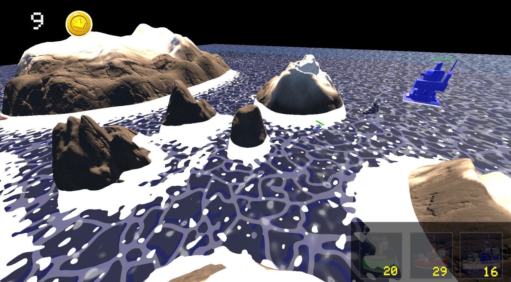
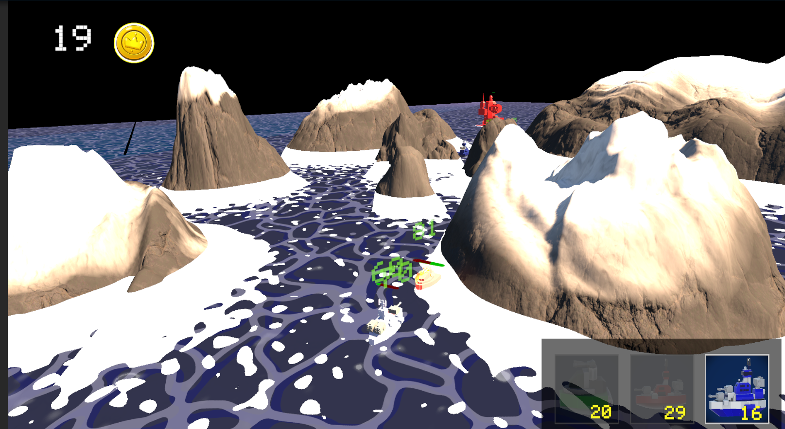
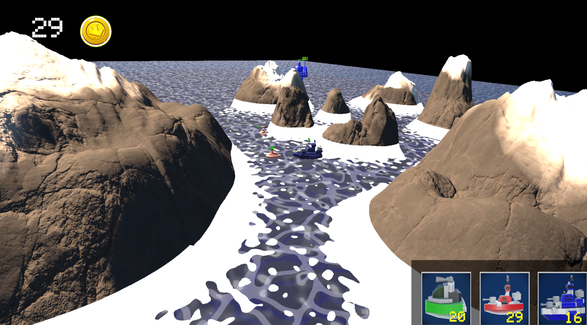
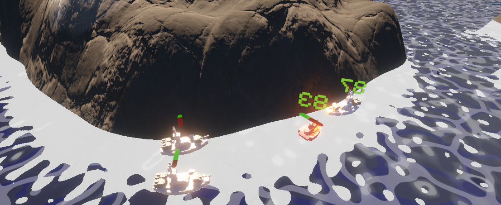

ColdSteel
Unity
Lead Programmer
Game Balance
UI




Sobre el juego
ColdSteel es un RTS de combate automático asimétrico. El jugador se enfrenta a una IA mediante un sistema de oleadas. Gestionando el oro disponible, el jugador debe elegir estratégicamente qué unidades desplegar (Melé, Tanque o Distancia). Las tropas se dirigen automáticamente a la base enemiga y entran en combate al cruzarse con rivales. El objetivo es destruir la base enemiga antes de que la tuya caiga.
Mi Contribución
- Programación Core: Desarrollador principal (Lead Programmer), encargado de la arquitectura completa del juego, lógica de oleadas y combate automático.
- Data & Balance: Desarrollo e implementación de un sistema que lee automáticamente la hoja de balanceo para actualizar las estadísticas del juego sin tocar el código.
- UI y Entorno: Creación técnica del entorno de juego y apoyo en la implementación del diseño de la interfaz de usuario.
- QA y Testeo: Participación activa en las sesiones de pruebas para ajustar el balance y coste de las unidades.